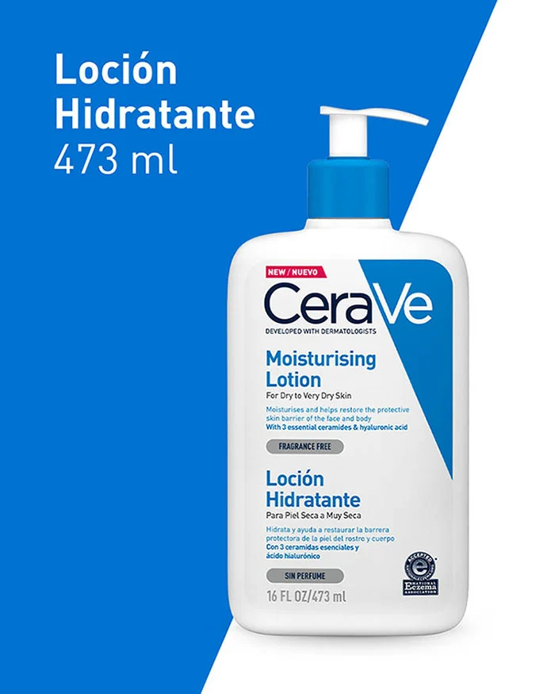
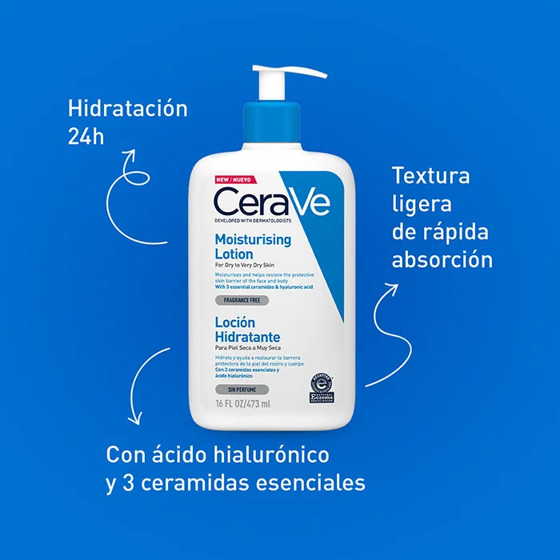
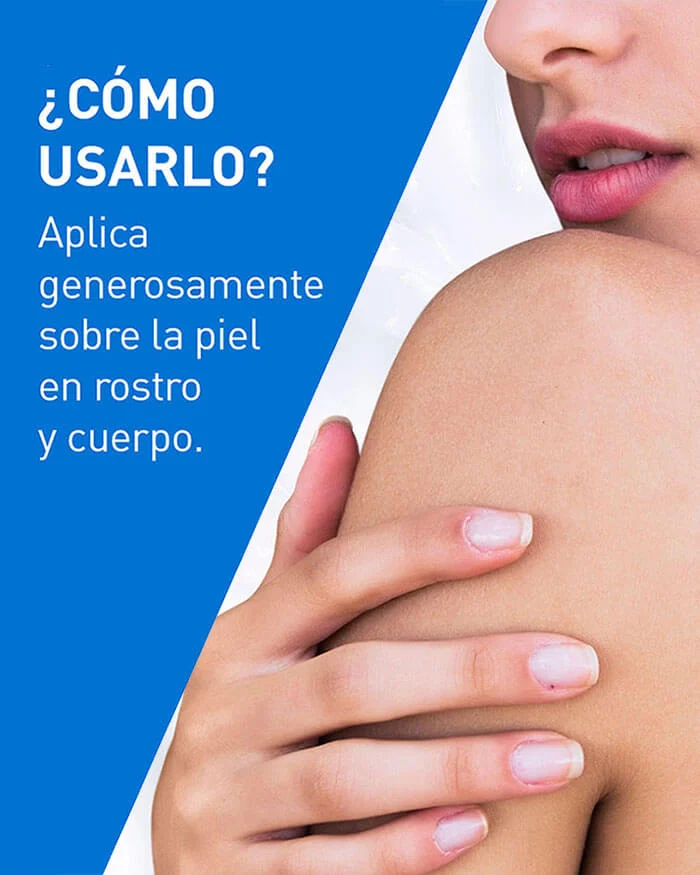

Loción hidratante para uso diario
Para piel normal a seca$35.000
Loción hidratante sin aceite con ácido hialurónico
Encontrar los productos adecuados para su rutina de cuidado de la piel debería reducirse a unos pocos y sencillos pasos.
Además de la limpieza y la protección solar, es esencial un hidratante diario. Recomendamos buscar ingredientes como el ácido hialurónico y las ceramidas para ayudar a restaurar y mantener la barrera protectora de la piel.
La Loción hidratante para uso diario CeraVe es ligera y no contiene aceites, y ayuda a hidratar la piel y a restaurar su barrera natural.
Formulada con tres ceramidas esenciales y ácido hialurónico, también cuenta con la Tecnología MVE patentada para una hidratación duradera y una fórmula ligera y no comedogénica que no obstruye los poros.
Nuestra loción hidratante para uso diario deja sensación de confort y es suave con la piel mientras proporciona una hidratación de 24 horas.
| Ingredientes | Aqua / Agua / Eau, Glicerina, Triglicérido Caprílico/Cáprico, Alcohol Cetearílico, Alcohol Cetílico, Fosfato de Potasio, Fosfato de Potasio, Ceramida NP, Ceramida AP, Ceramida EOP, Carbómero |
| Contenido | 473 ml |
| Beneficios |
|
| Cómo ultilizarlo |
|